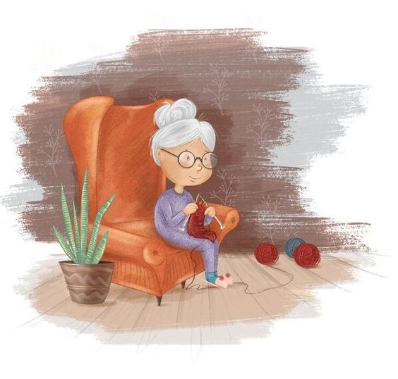
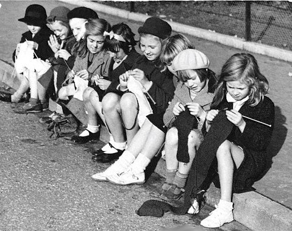

Cuando pensamos en tejer, es común que la imagen que nos viene a la mente sea la de una abuelita sentada en su sillón favorito, rodeada de ovillos de lana de colores y moviendo ágilmente sus agujas.
Esta imagen tierna nos da una idea de lo antiguo y significativo que es el crochet. A lo largo de los años, el crochet ha sido una forma de arte y una manera de unir a las generaciones, pasando de mano en mano y de corazón a corazón. Aunque es difícil saber exactamente el momento exacto en el que nació el crochet, algunas teorías sugieren que el crochet tiene sus orígenes en técnicas más antiguas practicadas en Arabia, Sudamérica o China. Se piensa que estas culturas podrían haber influido en la aparición del crochet en Europa a través de rutas comerciales.
También existe otra teoría "Según Annie, el origen de esta técnica se dio en Francia, donde se conocía como “cordón del crochet”- La palabra crochet corresponde a un diminutivo de “croché” que tiene relación con el alemán “croc” que quiere decir “gancho”."
Fuente: Fuente: Hablemos de Crochet y sus orígenes
A lo largo de los años este se fue popularizando entre las mujeres de todo el mundo por su belleza y delicadez. Se valoraba como una habilidad doméstica y social, y las mujeres pasaban horas creando elaboradas piezas de crochet, desde encajes hasta prendas de vestir. Hoy en día, el crochet ha experimentado un renacimiento moderno. Gracias a internet y las redes sociales, la comunidad global de crochet se ha expandido enormemente. Los tejedores de crochet comparten sus patrones, técnicas y proyectos en plataformas como Instagram, Pinterest y YouTube. Además, el crochet ha ganado popularidad como una forma de arte terapéutica, promoviendo la relajación y el bienestar mental, lo que ha hizo que se haya popularizado entre los jóvenes.
